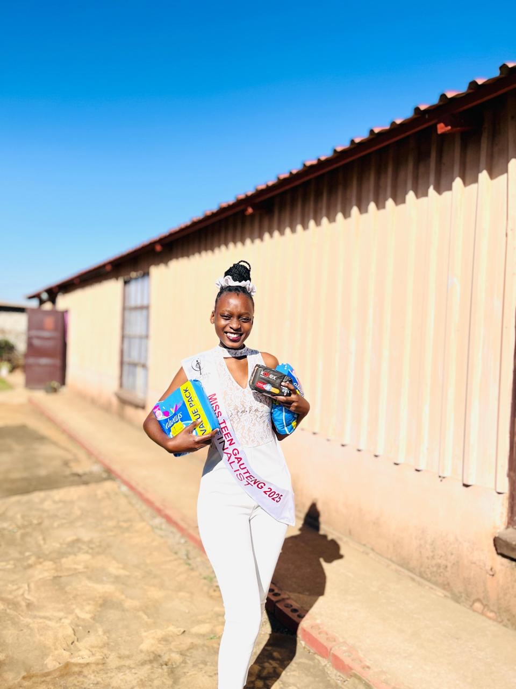
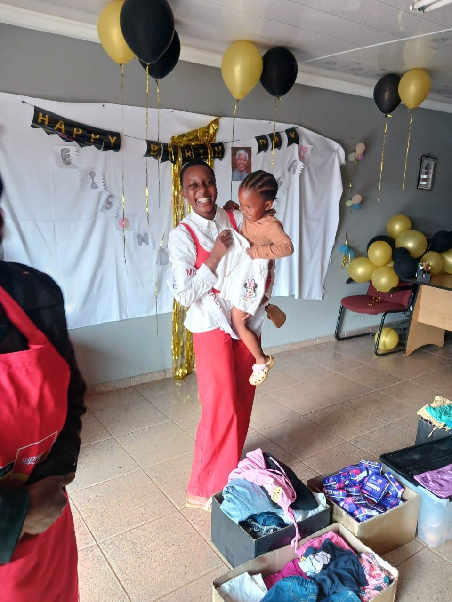
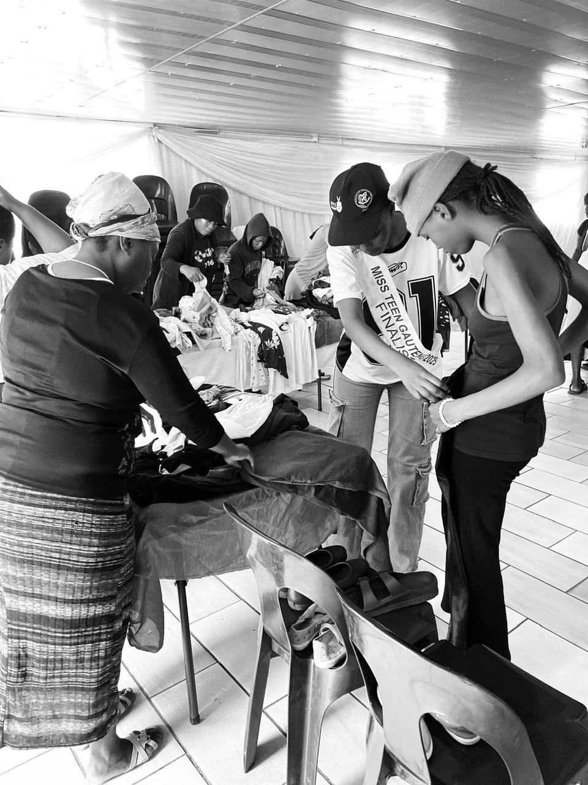

What We Offer
We provide information about the charity and Lucia’s journey for those who visit the website. We also gather resources to help those in need.
Our services are designed for people who want to be empowered to achieve whatever they set out to achieve. We make information easy to find and provide clear navigation for everyone who wants to support Lucia’s journey or make a donation.
Educational Programmes About Fear

We run educational programmes that help young people from townships and rural areas understand and overcome the fear of the unknown, failure, and judgment. These programmes build confidence and self-belief.
Donation Drives

We organise donation drives for clothes, food, and sanitary towels. Every contribution leaves a smile on the faces of those who need it most.
Building Confidence and Self-Empowerment

We work with orphanages and youth to develop self-empowerment. Staying at a shelter should never limit a young person’s dreams or ambitions.
How We Measure Success
One of our key performance indicators is that 80% of people who visit our website donate something or take action to support the cause. Every act of kindness makes someone smile and helps build a bigger future by lifting others.
We would really appreciate your support. Please visit our Enquiry page or Contact page to get involved.